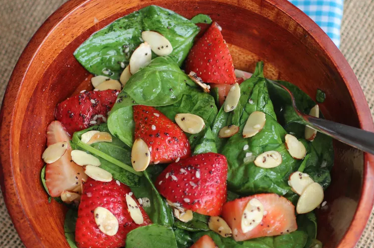

Strawberry Spinach Salad

Description
This strawberry spinach salad is a great way to get kids to eat spinach! Someone brought this salad to a potluck dinner, and I had to have the recipe. Since then, I've made it many times and I've been asked for the recipe every time I take it somewhere.
Ingredients
Dressing
- ½ cup white sugar
- ½ cup olive oil
- ¼ cup distilled white vinegar
- 2 tablespoons sesame seeds
- 1 tablespoon poppy seeds
- 1 tablespoon minced onion
- ¼ teaspoon paprika
- ¼ teaspoon Worcestershire sauce
Salad
- 1 quart strawberries - cleaned, hulled and sliced
- 10 ounces fresh spinach - rinsed, dried and torn into bite-size pieces
- ¼ cup almonds, blanched and slivered
Steps
- Make dressing: Whisk together sugar, oil, vinegar, sesame seeds, poppy seeds, onion, paprika, and Worcestershire in a medium bowl. Cover and chill for 1 hour.
- Make salad: Combine strawberries, spinach, and almonds in a large bowl.
- Pour dressing over salad: Toss to coat. Refrigerate for 10 to 15 minutes before serving.